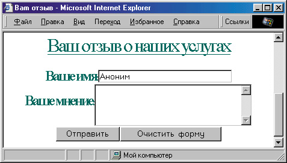
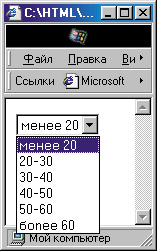
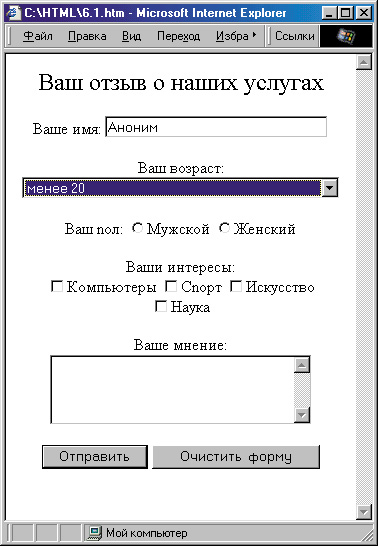
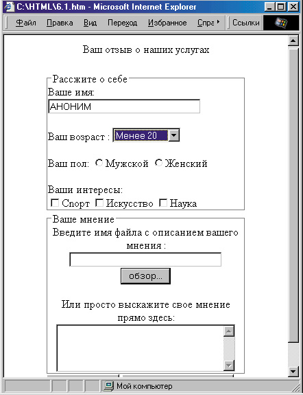

|
|
|
7. Веб-страницы, реагирующие на действия пользователя
7.1. Ввод данных пользователем в формы HTML
Одно из основных отличий новой версии HTML (4.0) от предыдущих состоит в том, что теперь веб-страница может отслеживать действия пользователя и реагировать на них, изменяя свой вид. В этой главе мы рассмотрим несколько примеров такой реакции. Однако сначала давайте рассмотрим классический способ взаимодействия с пользователем, появившийся еще в предыдущих версиях языка.
Этот способ заключается в построении так называемых форм. Он состоит в том, что на веб-страницу выводится, к примеру, несколько текстовых полей, куда пользователь может ввести какой-либо текст, а потом с помощью специальной кнопки отправить его серверу. Вместо ввода текста пользователю может быть предложено выбрать несколько пунктов из заготовленного списка или отметить флажками нужные пункты и т. п. Такое взаимодействие с пользователем весьма условно — ведь информация, кото рую он ввел и отправил, все равно обрабатывается на стороне сервера.
Получение информации от пользователя
В качестве примера давайте рассмотрим страницу для отзывов клиентов об услугах гипотетической фирмы “Лентяй”. Это, конечно, будет не совсем то, что обычно подразумевается под книгой отзывов на сайте. Просто мы предоставим пользователю возможность ввести информацию и отправить ее на сервер (как уж она будет там обрабатываться, мы сейчас рассматривать не будем).
Итак, возьмем заголовок и правую часть веб-страницы. Только добавим ссылку на страницу “Услуги” и снимем ее с “Книги отзывов”:
<DIV CLASS="rght">
<DIV CLASS="lnk"><A HREF="main.html">УСЛУГИ
</A>
</DIV> <DIV CLASS="lnk">
<A HREF="prices .html">ЦЕНЫ
</A>
</DIV>
<DIV CLASS="lnk">
<A HREF="forml.html">Форма 3AKA3A
</A>
</DIV>
<DIV CLASS="lnk">
<A HREF="history.html">История
<SPAN STYLE="letter-spacing: -3px; ">KOMПAHИИ
</SPAN>
</A>
</DIV>
<DIV CLASS="lnk">Книга OT3ЫBOB</DIV>
А в левую часть страницы давайте поместим форму. Для этого сначала добавим специальный тег <FORM>, без которого невозможно будет отправить данные на сервер обычными средствами. Здесь нам потребуется указать атрибут METHOD=, с помощью которого броузер определяет способ отправки данных: в виде “добавки” к строке URL (метод get) или в виде блока данных (метод post). В качестве значения атрибут ACTION= необходимо указать URL-адрес сервера, куда отправятся данные. Здесь можно также указать адрес электронной почты (с префиксом mailto:) — в этом случае данные формы отправятся по указанному адресу. В нашем случае давайте укажем гипотетический URL-адрес сервера cgi.lentyay.com, где обработка данных формы будет происходить с помощью какого-нибудь CGJ-сценария:
<FORM ACTION="http://cgi.lentyay.corn/guest.cgi" METHOD="post">
В конце формы должен стоять закрывающий тег </FORM>. Все, что находится внутри, можно будет сообщить серверу. Для отправки данных формы традиционно используется кнопка с названием Submit (Отправить). Для ее создания можно использовать тег <INPUT> с атрибутом TYPE="submit":
<INPUT TYPE="submit" VALUE="Отправить">
Атрибут VALUE= при этом определяет надпись на кнопке. Если его не задать, то на кнопке будет написано Submit. Какие же данные будут отправлены? Для начала давайте спросим у пользователя его имя, выделив для этого небольшое однострочное текстовое поле, и мнение об услугах фирмы, для чего выделим многострочное текстовое поле.
Поля для ввода текста
Чтобы создать однострочное текстовое поле, нужно также воспользоваться тегом <INPUT> , но уже с атрибутом TYPE="text". При этом его ширина задается с помощью атрибута SIZE=. Чтобы программе обработки данных (или человеку, который будет в этих данных разбираться) было понятно, какие данные к какому полю относятся, желательно для каждого поля указать атрибут NAME=. В данном случае мы запрашиваем у пользователя его имя, поэтому пусть значением этого атрибута будет слово Имя (по-английски тоже Name):
<INPUT TYPE="text" NAME="Name" VALUE="Аноним" SIZE="30">
При этом атрибут VALUE= определяет, что будет изначально написано в текстовом поле. Обратите внимание на то, что атрибут SIZE= определяет только видимую ширину текстового поля, но вовсе не ограничивает количество вводимых пользователем символов. Если же надо ввести такое ограничение, то следует пользоваться атрибутом MAXLENGTH=.
— Хорошо, — скажете вы, — но как пользователь узнает, что от него требуется ввести в это поле?
Чтобы дать ему “подсказку”, можно просто написать ее текст перед текстовым полем:
Ваше имя: <INPUT TYPE="text" NAME="Name" УАШЕ="Аноним" SIZE="30">
Однако лучше воспользоваться тегом <LABEL> , который был введен в Internet Explorer версии 4. Он гарантирует привязку метки к полю ввода. В нем нужно указать единственный атрибут FOR=, значение которого должно содержать имя поля ввода:
<LABEL FOR="Name">Baшe имя:</LABEL>
<INPUT TYPE="text" NAME="Name" VALUE="AHOHИM" SIZE="30"><BR>
Теперь давайте создадим многострочное текстовое поле для ввода мнения клиента об услугах фирмы. Для этого необходимо использовать тег <TEXTAREA>. В нем можно с помощью атрибутов COLS= и ROWS= определить количество символов в строке и число строк текстового поля:
<TEXTAREA COLS="30" ROWS="4" NAME”"Opinion" STYLE="vertical-align: middle;"></TEXTAREA>
Как видите, здесь мы также определили атрибут NAME=. А поскольку это текстовое поле является многострочным, мы применили еще и стилевое свойство vertical-align, чтобы “подсказка” пользователю расположилась по центру (по умолчанию она располагается внизу).
Кроме того, не забудьте поставить закрывающий тег </TEXTAREA> , поскольку все, что находится между открывающим и закрывающим тегами, будет трактоваться как содержимое текстового поля. Если не поставить закрывающий тег, все последующее содержимое веб-страницы окажется в текстовом поле, причем в виде исходного текста!
Теперь давайте добавим еще одну “традиционную” кнопку, при нажатии на которую все поля формы очищаются (или приобретают исходные значения, определенные атрибутом VALUE= — в данном случае при ее нажатии в поле Ваше имя появится запись Аноним). Такую кнопку можно создать с помощью тега <INPUT> с атрибутом <TYPE="reset">:
<INPUT TYPE="reset" VALUE ="Очистить форму">
Как и в случае с кнопкой Submit, значение VALUE= здесь определяет надпись на кнопке. Если этот атрибут не установлен, на кнопке будет написано: Reset. Давайте посмотрим, что v нас получается в целом.
<!DOCTYPE HTML PUBLIC "-//W3C//DTD HTML 4.0 Transitional//EN">
<HTML>
<HEAD>
<TITLE>Baш отзыв</ТIТLЕ>
<STYLE> BODY { background-color: #D2FFFF;
color: #003737; background-image: url("Images\grad2.jpg");
background-position: right;
background-repeat: repeat-y;
} HI { text-align: center } A:link,A:active,A:visited {
color: #006A6A;
} A:hover { font-weight: bold; text-decoration: none;
} .hdr { position:
absolute;
left: 50px;
top:
10px;
text-align:
center;
font-family:
OdessaScriptFWF, fantasy; font-size: 60px;
font-weight: 900;
width: 90%;
height: 100px;
letter-spacing: 0.05em;
line-height: 100px;
filter: shadows- border:
10px outset #003163;
color: #3163CE; }
.1ft {
position: absolute;
font-size: meduim;
left: 10px;
top: 160px;
width: 160px;
height: 400px;
overflow-x: visible;
} .Ink {
border-width: thick;
border-style: ridge;
margin: 10рх;
padding: 5px;
border-color: #319CFF;
background-image: url("Images\backlnkl.jpg") ; color: red;
text-align: center; }
.Ink A {
text-decoration: none; color: white;
} .logo {
position: absolute;
left: 150; top: 220;
z-index: -5;
} </STYLE>
</HEAD>
<BODY>
<DIV CLASS="hdr">Фиpмa «ЛEHTЯЙ»</DIV>
<DIV CLASS="rght">
<DIV CLASS="lnk">
<A HREF="main.html">УСЛУГИ</A>
</DIV> <DIV CLASS="lnk">
<A HREF="prices .html">ЦЕНЫ</A></DIV>
<DIV CLASS="lnk">
<A HREF="forml .html">ФOPMA 3AKA3A</A> </DIV>
<DIV CLASS="lnk">
<A HREF="history.html">ИСТОРИЯ <SPAN STYLE="letter-spacing: -3рх; ">КОМПАНИИ</SРАN></А>
</DIV>
<DIV CLASS="lnk">KHHГA OT3ЫBOB</DIV>
</DIV> <DIV CLASS="lft">
<Н1>Ваш отзыв с наших услугах</Н1>
<DIV ALIGN="center">
<FORM ACTION="http://cgi.lentyay.corn/guest.cgi" METHOD="post">
<LABEL FOR="Name">Bame имя:</LABEL>
<INPUT TYPE="text" NAME="Name" VALUE="Аноним" SIZE="30">
<BR>
<LABEL FOR="Opinion">Baшe мнение:</LABEL>
<TEXTAREA COLS="30" ROWS="4" NAME="Opinion" STYLE="vertical-align: middle; "></TEXTAREA>
<BR> <INPUT TYPE="submit" VALUE="Отправить">
<INPUT TYPE="reset" VALUE="Очистить форму"> </FORM> </DIV> </DIV>
<IMG CLASS="logo" SRC="Imqes/logo6.gif" WIDTH="500" HEIGHT="346" BORDER="0">
</BODY>
</HTML>
Результат работы этого кода показан на рис. 7.1. Как видите, пользователь имеет возможность ввести свое имя и выразить свое мнение в текстовых полей, а нажав кнопку Отправить, может послать эти данные серверу.
Списки
В принципе, на этом рассмотрение классической HTML-формы можно бы и завершить, но дело в том, что кроме текстовых полей форма может содержать еще некоторые элементы, которые мы пока не рассмотрели. Поэтому давайте для примера дополним нашу форму еще несколькими вопросами о пользователе — пусть он укажет свой возраст, пол и интересы.
Выбор возрастной категории можно организовать в виде раскрывающегося списка. Для создания такого списка используется тег <SELECT> . Между ним и его закрывающим тегом </SELECT> можно поместить несколько пунктов будущего списка. Каждый из них должен начинаться с тега <OPTION> . В данном случае мы можем написать так:
<SELECT NAME="Age" SIZE="1">
<OPTION VALUE="10">менее 20
<OPTION VALUE="20">20–30
<OPTION VALUE="30">30–40
<OPTION VALUE="40">40–50
<OPTION VALUE="50">50–60
<OPTION VALUE="60">6onee 60 </SELECT>

Рис. 7.1. Простейшая форма HTML
При этом на экране будет отображен раскрывающийся список, из которого пользователь может выбрать любой из пунктов. Значение атрибута VALUE= выбранного пункта будет передано на сервер при отправке данных формы.
Вы, вероятно, обратили внимание еще на один атрибут тега <SELECT> — атрибут SIZE=. Здесь его значение равно 1 (кстати, это значение определено по умолчанию, так что можно было этот атрибут и не указывать). Если указать значение, большее 1, то в окне броузера вместо раскрывающегося списка отобразится так называемый прокручиваемый список. На рис. 7.2 приведен пример прокручиваемого списка при атрибуте SIZE="3". Как видно, в данном случае в списке одновременно отображаются три строки (число одновременно отображаемых строк прокручиваемого списка и определяется с помощью атрибута S1ZE=). Если же надо дать пользователю возможность выбора сразу нескольких пунктов из списка, то в теге <SELECT> надо установить атрибут MULTIPLE=.

Рис. 7.2. Прокручиваемый список
Переключатели
помощью такого списка можно было бы организовать и выбор пола, однако давайте применим для этого другой элемент формы — переключатели. Они употребляются группами, в которых только один переключатель может быть включен одновременно. Каждый из переключателей создается с помощью тега <INPUT> с атрибутом TYPE="radio". В группу будут объединены те переключатели, теги которых имеют одинаковые значения атрибута NAME=. Например, в данном случае мы можем написать так:
<LABEL FOR="Sex">Baш пол:</LABEL>
<INPUT TYPE="radio" NAME="Sex" VALUE="М">Мужской <INPUT TYPE="radio" NAME="Sex" LABEL="F">Женский
Как видите, значение атрибута NAME= одинаково у обоих тегов <INPUT> , поэтому пользователь не сможет выбрать оба пункта одновременно (при выборе одного из пунктов выбор предыдущего отменяется). Кстати, в этом примере изначально не выбран ни один из пунктов. Если же надо, чтобы какой-либо пункт был выбран заранее, то необходимо в соответствующем теге <INPUT> установить атрибут CHECKED, например, вот так:
<INPUT TYPE="radio" NAME°"Sex" VALUE="F" СНЕСКЕD>Женский
Установка этого атрибута сразу у нескольких переключателей одной группы смысла не имеет, поскольку при выводе на экран при этом будет отмечен только последний из них.
Флажки
Теперь давайте спросим пользователя о его интересах. Для этого органи зуем список из нескольких пунктов, которые он сможет отметить флаж ками. Каждый из пунктов такого списка создается с помощью все того же тега <INPUT> , однако теперь у него должен быть атрибут TYPE="checkbox". Впрочем, этот вариант практически ничем не отличается от предыдущего, кроме того, что пользователь может выбрать сразу несколько пунктов или даже все. Например:
<LABEL FOR="Interestsl">Baiim интересы :<BR></LABEL>
<INPUT TYPE="checkbox" NAME="Interestsl" VALUE="Computers">КОМПЬЮТЕРЫ
<INPUT TYPE="checkbox" NAME="Interests2" VALUE="Sports">Cnopт
<INPUT TYPE="checkbox" NAME="Interests3" VALUE="Art">Иcкyccтво
<INPUT TYPE="checkbox" NAME="Interests4" VALUE="Science">Hayкa
В данном случае мы установили для каждого пункта разные значения атрибута NAME=, но они могли бы быть и одинаковыми. Как и в предыду щем случае, здесь можно установить атрибут CHECKED, чтобы соответствующий пункт появился на экране заранее отмеченным по умолчанию.
Давайте посмотрим, что у нас получается (для экономии места приведем текст не всей страницы, а только ее левой части):
<DIV CLASS="lft"> <Н1>Ваш отзыв о наших услугах</Н1>
<DIV ALIGN="center"> <FORM ACTION="http://cgi.lentyay.corn/guest.cgi" METHOD="post"> <LABEL FOR="Name">Baшe имя:</LABEL>
<INPUT TYPE="text" NAME="Name" VALUE="Аноним" SIZE="30"><BR><BR> <LABEL FOR="Age">Baш возраст:</LABEL>
<SELECT NAME="Age" SIZE="1">
<OPTION VALUE""10">менее 20 <OPTION VALUE="20">20–30 <OPTION VALUE="30">30–40
<OPTION VALUE="40">40–50
<OPTION VALUE="50">50–60
<OPTION VALUE="60">6onee 60 </SELECT>
<BR><BR>
<LABEL FOR="Sex">Baш noл:</LABEL>
<INPUT TYPE="radio" NAME="Sex" VALUE="М">Мужской
<INPUT TYPE="radio" NAME="Sex" VALUE="F">Женский
<BR><BR> <LABEL FOR="Interestsl">Baши интересы:<BR></LABEL>
<INPUT TYPE="checkbox" NAME="Interestsl" VALUE="Computers">Компьютеры
<INPUT TYPE="checkbox" NAME="Interests2" VALUE="Sports">Cnopт
<INPUT TYPE="checkbox" NAME="Interests3" VALUE="Art">Иcкyccтво
<INPUT TYPE="checkbox" NAME="Interests4" VALUE="Science">Hayкa
<BR><BR> <LABEL FOR="Opinion">Baшe мнение:</LABEL>
<TEXTAREA COLS="30" ROWS="4" NAME="Opinion" STYLE="vertical-align: middle; "></TEXTAREA>
<BR><BR> <INPUT TYPE="submit" VALUE="Отправить">
<INPUT TYPE="reset" VALUE="Очистить форму">
</FORM>
</DIV>
</DIV>
Результат работы кода показан на рис. 7.3. Как видите, эта форма полу чилась более разнообразной благодаря использованию разных типов эле ментов управления для ввода данных. Поэтому она и смотрится более привлекательно.

Рис. 7.3. Форма с элементами управления
Группы элементов формы
Неплохо бы было еще логически объединить то, что связано со сведениями о пользователе, и то, что связано с его мнением. Для такого группирова ния элементов форм в HTML 4.0 был введет тег <FIELDSET> . Все, что нахо дится между ним и его закрывающим тегом </FIELDSET> , будет обведено в рамку и озаглавлено так, как указано в теге <LEGEND>. Теги <FIELDSET> и <LEGEND> поддерживаются пока только в Internet Explorer версии 4 и выше, а броузер Netscape начал поддерживать их только в шестой версии. Кроме того, элементы <FIELDSET> пока не очень хорошо позиционируются на веб- страницах. Как вы увидите в следующем примере, для корректного цент рирования их на странице (в Internet Explorer 5) нам пришлось поместить всю форму в центрированную таблицу и, кроме того, отдельно центриро вать то, что расположено между каждой парой тегов <FIELDSET> и </FIELDSET>.
Тег <FIELDSET> можно употребить следующим образом:
<FIELDSET Т1ТЬЕ="Сведения о клиенте"> <LEGEND ALIGN="left">Paccкaжитe о ce6e</LEGEND>
После этого можно поместить несколько элементов формы и поставить закрывающий тег </FIELDSET> . В броузере Internet Explorer значение атрибута TITLE= выводится в качестве всплывающей подсказки при наведении мыши на содержимое элемента <FIELDSET> . Кстати, это относится также и к другим тегам, которые могут иметь атрибут TITLE=. Можно, например, установить его даже у элемента <BODY> . А то, что находится между тегами <LEGEND> и </LEGEND> , будет вынесено в заголовок рамки.
Аналогично, давайте создадим рамку для той части формы, в которую пользователь вводит свое мнение:
<FIELDSET TITLE="Baшe мнение">
<LEGEND ALIGN=left>Baшe Mнeниe</LEGEND>
Теперь давайте предоставим пользователю возможность выбора между вводом мнения в текстовое поле и указанием имени файла, в котором он это мнение описывает. Для указания имени файла, в принципе, подошло бы и обычное однострочное текстовое поле. Однако оно имело бы один недостаток: вводить имя файла пользователю приходилось бы только вручную.
Этот недостаток можно устранить, используя специальный тип тега <INPUT> . Если в этом теге установить атрибут TYPE="file", то пользователь увидит на экране текстовое поле для ввода имени файла, а рядом с ним будет расположена кнопка, при нажатии на которую откроется стандартное окно выбора файла. Имя выбранного файла будет автоматически введено в текстовое поле. Можно написать, например, так:
<LABEL FOR="Opinion-File">BBennTe имя файла с описанием вашего мнения: </LABEL><BR>
<INPUT TYPE="file" NAME="Opinion-File" SIZE="30">
Как видите, с помощью атрибута SIZE= здесь также можете задать ширину текстового поля.
Давайте посмотрим, что у нас получается в целом (как и в прошлый раз, мы приводим текст только для левой части страницы, все остальное остается прежним).
<DIV CLASS="lft"> <Н1>Ваш отзыв о наших услугах</Н1>
<DIV ALIGN="center"> <TABLE WIDTH="75%"><TR><TD>
<FORM ACTION="http://cgi.lentyay.corn/guest.cgi" METHOD="post">
<FIELDSET Т1ТLЕ="Сведения о клиенге">
<LEGEND ALIGN="left">Paccжите о ce6e</LEGEND>
<DIV ALIGN="center">
<LABEL FOR="Name">Baшe имя:</LАВЕL>
<INPUT TYPE="text" NAME="Name" VALUE="AHOHИM" SIZE="30">
<BR><BR>
<LABEL FOR="Age">Baш возраст :</LABEL>
<SELECT NAME="Age" SIZE="1">
<OPTION VALUE="10">Meнee 20
<OPTION VALUE="20">20–30
<OPTION VALUE="30">30–40
<OPTION VALUE="40">40–50
<OPTION VALUE="50">50–60
<OPTION VALUE="60">6onee 60 </SELECT>
<BR><BR>
<LABEL FOR="Sex">Baш пол:</LABEL>
<INPUT TYPE="radio" NAME="Sex" VALUE="М">Мужской
<INPUT TYPE="radio" NAME="Sex" VALUE="F">Женский
<BR><BR>
<LABEL FOR="Interestsl">Baши интересы:<BR></LABEL>
<INPUT TYPE="checkbox" NAME="Interestsl" VALUE=" Computers ">Kомпьютеры
<INPUT TYPE="checkbox" NAME="Interests2" VALUE="Sports">Cnopт
<INPUT TYPE="checkbox" NAME="Interests3" VALUE="Art">Иcкyccтво
<INPUT TYPE="checkbox" NAME="Interests4" VALUE="Science">Hayкa
</DIV> </FIELDSET>
<BR>
<FIELDSET ТIТLЕ="Ваше мнение">
<LEGEND ALIGN="left">Bame мнение</LEGEND>
<DIV ALIGN="center">
<LABEL FОR="Орtion-Fi1е">Введите имя файла с описанием вашего мнения :</LABEL>
<BR>
<INPUT TYPE="file" NAME="Opinion-File" SIZE="30">
<BR><BR>
<LABEL FOR="Opinion-Text">Или просто выскажите свое мнение прямо здесь: </LABEL>
<BR>
<TEXTAREA COLS="30" ROWS="4" NAME="Opinion-Text" STYLE="vertical-align: middle; "></TEXTAREA>
</DIV>
</FIELDSET>
<BR>
<DIV ALIGN="center">
<INPUT TYPE="submit" VALUE="Отправить">
<INPUT TYPE="reset" VALUE="Очистить форму"> </DIV>
</FORM> </TD></TR></TABLE> </DIV> </DIV>
Результат показан на рис. 7.4. Надпись на кнопке выбора файла зависит от используемого броузера, но, как правило, это Обзор или Browse.

Рис. 7.4. Логическое объединение элементов формы.
Другие элементы формы
Итак, запомним, что тег <INPUT> может использоваться в формах для создания самых разных элементов управления. Вид элемента зависит от значения атрибута TYPE= этого тега. Некоторые из этих значений мы уже рассмотрели. Теперь давайте просто перечислим оставшиеся:
<INPUT TYPE="password">
Такая запись создает текстовое поле, в котором введенный текст отображается звездочками. Обычно такие поля используются для ввода паролей.
<INPUT TYPE="button">
А такая запись создает кнопку произвольного назначения. В отличие от кнопок типа Submit (Отправить) или Reset (Сброс), при нажатии на эту кнопку ничего не произойдет, если не написан соответствующий обработчик события (с обработчиками событий мы познакомимся в следующем разделе). Тег <lNPUTTYPE="button"> во многом аналогичен рассмотренному в главе 3 тегу <BUTTON> . Однако, в отличие от последнего, он не позволяет отображать на кнопках графику и другие нестандартные объекты. С другой стороны, будучи элементом формы, он доступен для обработки в броузере Netscape 4.
<INPUT TYPE="hidden">
А этого поля на экране вообще не будет видно. Обычно его используют для передачи на сервер какой-либо пояснительной информации (значение этого поля, несмотря на его невидимость, все равно передается на сервер).
Итак, закончим на этом “формальную” часть этой главы и перейдем к примерам того, как элементы веб-страниц могут реагировать на действия пользователя.
|
|
|